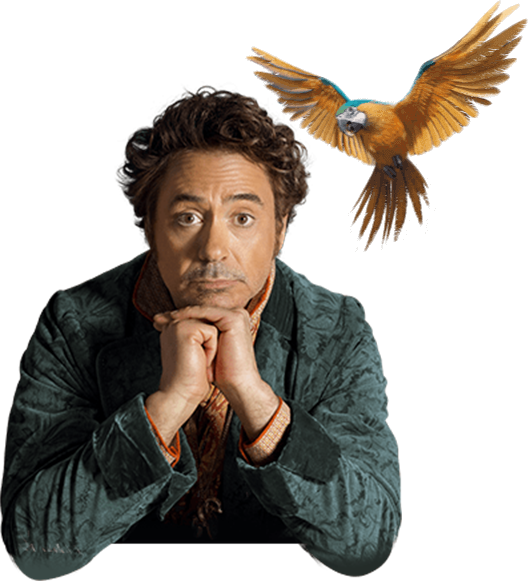

"어떤 위험이 따르더라도 우린 함께 하는 거야"
동물들과 소통하는 특별한 능력을 지닌 닥터 두리틀(로버트 다우니 주니어)은 사랑하는 사람을 잃고 세상과 단절한 채 동물들과 친구가 되어 살아간다. 어느 날, 여왕에게 알 수 없는 불치병이 생기고 왕국마저 위험에 빠지게 되자,그의 놀라운 능력만이 모든 것을 해결할 수 있음을 알게 된다. 세상을 구하기 위해서는 반드시 주어진 시간 안에 누구도 가보지 못했던 신비의 섬을 찾아내야만 하고 두리틀은 친구들과 함께 위험천만한 모험을 떠나게 되는데…
